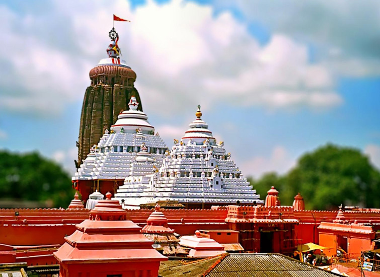
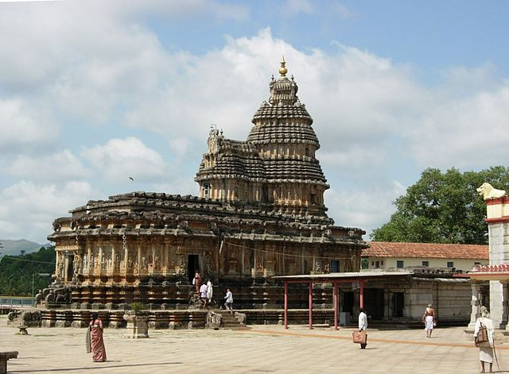
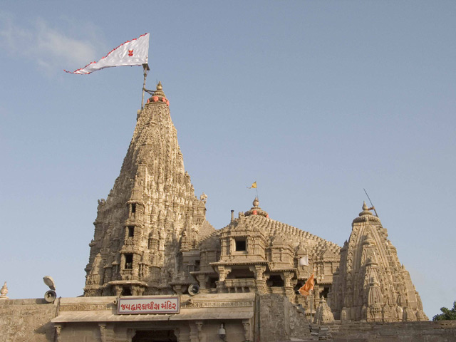
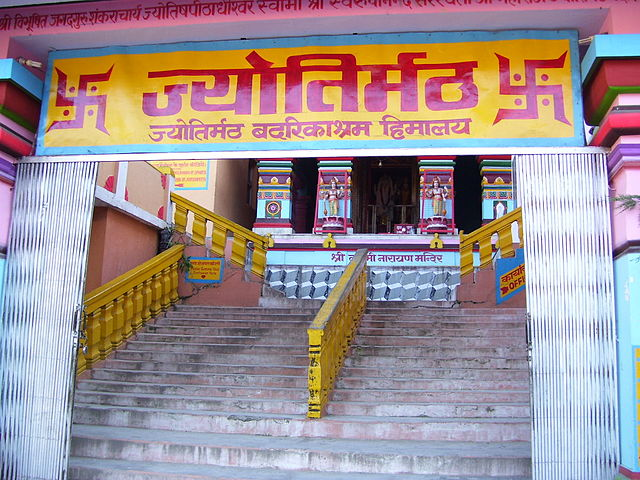

Govardhana Matha, Odisha – Rig Veda

Govardhana matha is located in the coastal city of Puri in Odisha and associated with the Lord Jagannath temple. The Eastern part of the Indian subcontinent from Bihar to till Rajamundry and Orissa to Arunachal Pradesh,comes under this Math.
Sharada Peetham, Karnataka – Yajur Veda

Sringeri Sharada Peetha was established by Adi Shankara on the banks of the Tunga River in Chikkamagalur district in Karnataka. Town of Sringeri is the site of the first Matha in India and one of the famous matha in Karnataka state along with Ramachandrapura Math
History Of Sanatani
Sanātanī From Wikipedia, the free encyclopedia Jump to navigation Jump to search Sanātanī (सनातनी[1]) is a term used to describe Hindu movements that incorporate various teachings from the Vedas, Upanishads, and other Hindu texts such as the Ramayana and Bhagavad Gita, which itself is often described as a concise guide to Hindu philosophy and a practical, self-contained guide to life.[2] Sanatanis as a denomination Since many reformist groups had the word Samaj (meaning society) or were led by a sant (meaning saint), Sanatanis are often held to be in contrast with Samajists and Santpanthis (meaning those who walk on the panth/path shown by their sant/saint).[3][4] Unlike South India, where religious traditions such as Shaivism, Shaktism and Vaishnavism form the principal Hindu denominations, "they were effectively subsumed under the Sanatani identity" in many regions of North India, and the Samajs and Santpanths became the other distinct Hindu denominations.[5] Reformist denominations such as the Arya Samaj are often fundamentalist in their approach. The Arya Samaj regards the Vedas as infallible scripture, and rejects what it regards as non-Vedic innovations in Sanatani Hinduism.[6] These non-Vedic additions included inherited caste, the position of Brahmins as a revered group, idol-worship, and the addition of thousands of deities to the Sanatani Hindu pantheon.[6][7] These differences are often apparent in social practices. Arya Samaji weddings, for instance, are based on Vedic practice and tend to be simpler and shorter with a qualified individual of any caste-heritage conducting the wedding, whereas Sanatani weddings are longer, with more complex rituals and always involve an officiating Brahmin priest.[8] Competition with other denominations Sanatanis and reformists (such as the Arya Samaj, the Radha Soamis and the Ramakrishna Mission) have competed for adherents for more than a century, sometimes creating deep schisms in Hindu society, as in the case of South African Hindus who were split between the Arya Samaj and Sanatanis.[4] While the reformist groups were better organized initially, by the 1860s, a process of internal counter-reform was underway in Sanatani groups as well, and societies to propagate orthodox beliefs along modern lines emerged, such as Sanatan Dharm Rakshini Sabha in 1873.[9][10] Some religious commentators have compared the Sanatani-Samaji dichotomy within Hinduism as similar to the Catholic-Protestant division in Christianity.[11] References Neo-Sanskrit sanātanin-- "eternalist", from sanātana "eternal" plus the possessive -in suffix Maharishi Mahesh Yogi; On The Bhagavad Gita; A New Translation and Commentary With Sanskrit Text Chapters 1 to 6, Preface p.9 Lynn Teskey Denton, Steven Collins (6 August 2004), Female ascetics in Hinduism, SUNY Press, 2004, ISBN 978-0-7914-6179-2, "... The Sanatani-Santapanthi distinction ... ascetics recognize a sharp distinction between the sects that are snatani, orthodox or traditional ... and those that are not ... unorthodox sectarians are called santa or santapanthi, "those who follow the creed or path (panth) of a sant ..." Thillayvel Naidoo (1992), The Arya Samaj movement in South Africa, Motilal Banarsidass Publ., 1992, ISBN 978-81-208-0769-3, "... The reception accorded the Arya Samaj ... The Hindu community ... was split into two camps, one supportive and the other antagonistic ... attitudes of intransigence which characterised dialogue between the two groups ... the two terms "Samajists" and "Sanatanis" came into vogue ..." Sudha Pai, Jawaharlal Nehru University. Centre for Political Studies (2007), Political process in Uttar Pradesh: identity, economic reforms, and governance, Pearson Education India, 2007, ISBN 978-81-317-0797-5, "... Being Vaishnava, Shaiva or Shakta didn't matter for the Dwijas since they were effectively subsumed under the Sanatani identity. Multi-point religious fragmentation has become limited to the internal debates between the Sanatanis and the Arya Samajis ..." A.R. Desai (2005), Social background of Indian nationalism, Popular Prakashan, 2005, ISBN 978-81-7154-667-1, "... It declared the Vedas infallible and further, an inexhaustible reservoir of all knowledge, past, present and future ..." Dansk etnografisk forening (1995), Folk, Volumes 36-37, Dansk etnografisk forening, 1995, "... As a religious sect, the Arya Samaj came to contest the religious authority of the dominant orthodox Hindus (Sanatanis), thereby creating a dispute over the content of Indian and in particular Hindu ethnic identity, caste hierarchy and ..." Pahlad Ramsurrun (2001), Glimpses of the Arya Samaj in Mauritius, Sarvadeshik Prakashan Ltd., 2001, "... Sanatani families may have an Aryan (Vedic) marriage ceremony and then revert to Sanatani practices. ... is far less expensive, not so strict as to caste, simpler, and shorter ..." Philip Lutgendorf (1991), The life of a text: performing the Rāmcaritmānas of Tulsidas, University of California Press, 1991, ISBN 978-0-520-06690-8, "... Perhaps the most significant impact of the Arya Samaj, the most reformist ... came from the organizational model it presented, which increasingly came to be emulated by orthodox groups ... the Sanatan Dharm Rakshini Sabha ... formed in Calcutta in 1873 ..." Tika Ram Sharma, D. M. Gupta (1987), Essays on Rabindranath Tagore, Vimal Prakashan, 1987, "... The aftermath of the bitter and violent attack of Aryasamaj on idol-worship and an equally enthusiastic rebuttal by Sanatanis in the first three decades of this century presented as alarming a scene as a clash between Hindu and Muslim ..." Agehananda Bharati (Swami) (1972), The Asians in East Africa: Jayhind and UhuruProfessional-technical series, Nelson-Hall Co., 1972, ISBN 978-0-911012-49-1, "... If we regard the Arya Samaj as a Protestant movement— and it is that on all counts— and the sanatanis as the traditionalists, the Hindu "Catholics," so to speak ... Sanātanī From Wikipedia, the free encyclopedia Jump to navigation Jump to search Sanātanī (सनातनी[1]) is a term used to describe Hindu movements that incorporate various teachings from the Vedas, Upanishads, and other Hindu texts such as the Ramayana and Bhagavad Gita, which itself is often described as a concise guide to Hindu philosophy and a practical, self-contained guide to life.[2] Sanatanis as a denomination Since many reformist groups had the word Samaj (meaning society) or were led by a sant (meaning saint), Sanatanis are often held to be in contrast with Samajists and Santpanthis (meaning those who walk on the panth/path shown by their sant/saint).[3][4] Unlike South India, where religious traditions such as Shaivism, Shaktism and Vaishnavism form the principal Hindu denominations, "they were effectively subsumed under the Sanatani identity" in many regions of North India, and the Samajs and Santpanths became the other distinct Hindu denominations.[5] Reformist denominations such as the Arya Samaj are often fundamentalist in their approach. The Arya Samaj regards the Vedas as infallible scripture, and rejects what it regards as non-Vedic innovations in Sanatani Hinduism.[6] These non-Vedic additions included inherited caste, the position of Brahmins as a revered group, idol-worship, and the addition of thousands of deities to the Sanatani Hindu pantheon.[6][7] These differences are often apparent in social practices. Arya Samaji weddings, for instance, are based on Vedic practice and tend to be simpler and shorter with a qualified individual of any caste-heritage conducting the wedding, whereas Sanatani weddings are longer, with more complex rituals and always involve an officiating Brahmin priest.[8] Competition with other denominations Sanatanis and reformists (such as the Arya Samaj, the Radha Soamis and the Ramakrishna Mission) have competed for adherents for more than a century, sometimes creating deep schisms in Hindu society, as in the case of South African Hindus who were split between the Arya Samaj and Sanatanis.[4] While the reformist groups were better organized initially, by the 1860s, a process of internal counter-reform was underway in Sanatani groups as well, and societies to propagate orthodox beliefs along modern lines emerged, such as Sanatan Dharm Rakshini Sabha in 1873.[9][10] Some religious commentators have compared the Sanatani-Samaji dichotomy within Hinduism as similar to the Catholic-Protestant division in Christianity.[11] References Neo-Sanskrit sanātanin-- "eternalist", from sanātana "eternal" plus the possessive -in suffix Maharishi Mahesh Yogi; On The Bhagavad Gita; A New Translation and Commentary With Sanskrit Text Chapters 1 to 6, Preface p.9 Lynn Teskey Denton, Steven Collins (6 August 2004), Female ascetics in Hinduism, SUNY Press, 2004, ISBN 978-0-7914-6179-2, "... The Sanatani-Santapanthi distinction ... ascetics recognize a sharp distinction between the sects that are snatani, orthodox or traditional ... and those that are not ... unorthodox sectarians are called santa or santapanthi, "those who follow the creed or path (panth) of a sant ..." Thillayvel Naidoo (1992), The Arya Samaj movement in South Africa, Motilal Banarsidass Publ., 1992, ISBN 978-81-208-0769-3, "... The reception accorded the Arya Samaj ... The Hindu community ... was split into two camps, one supportive and the other antagonistic ... attitudes of intransigence which characterised dialogue between the two groups ... the two terms "Samajists" and "Sanatanis" came into vogue ..." Sudha Pai, Jawaharlal Nehru University. Centre for Political Studies (2007), Political process in Uttar Pradesh: identity, economic reforms, and governance, Pearson Education India, 2007, ISBN 978-81-317-0797-5, "... Being Vaishnava, Shaiva or Shakta didn't matter for the Dwijas since they were effectively subsumed under the Sanatani identity. Multi-point religious fragmentation has become limited to the internal debates between the Sanatanis and the Arya Samajis ..." A.R. Desai (2005), Social background of Indian nationalism, Popular Prakashan, 2005, ISBN 978-81-7154-667-1, "... It declared the Vedas infallible and further, an inexhaustible reservoir of all knowledge, past, present and future ..." Dansk etnografisk forening (1995), Folk, Volumes 36-37, Dansk etnografisk forening, 1995, "... As a religious sect, the Arya Samaj came to contest the religious authority of the dominant orthodox Hindus (Sanatanis), thereby creating a dispute over the content of Indian and in particular Hindu ethnic identity, caste hierarchy and ..." Pahlad Ramsurrun (2001), Glimpses of the Arya Samaj in Mauritius, Sarvadeshik Prakashan Ltd., 2001, "... Sanatani families may have an Aryan (Vedic) marriage ceremony and then revert to Sanatani practices. ... is far less expensive, not so strict as to caste, simpler, and shorter ..." Philip Lutgendorf (1991), The life of a text: performing the Rāmcaritmānas of Tulsidas, University of California Press, 1991, ISBN 978-0-520-06690-8, "... Perhaps the most significant impact of the Arya Samaj, the most reformist ... came from the organizational model it presented, which increasingly came to be emulated by orthodox groups ... the Sanatan Dharm Rakshini Sabha ... formed in Calcutta in 1873 ..." Tika Ram Sharma, D. M. Gupta (1987), Essays on Rabindranath Tagore, Vimal Prakashan, 1987, "... The aftermath of the bitter and violent attack of Aryasamaj on idol-worship and an equally enthusiastic rebuttal by Sanatanis in the first three decades of this century presented as alarming a scene as a clash between Hindu and Muslim ..." Agehananda Bharati (Swami) (1972), The Asians in East Africa: Jayhind and UhuruProfessional-technical series, Nelson-Hall Co., 1972, ISBN 978-0-911012-49-1, "... If we regard the Arya Samaj as a Protestant movement— and it is that on all counts— and the sanatanis as the traditionalists, the Hindu "Catholics," so to speakSanātanī From Wikipedia, the free encyclopedia Jump to navigation Jump to search Sanātanī (सनातनी[1]) is a term used to describe Hindu movements that incorporate various teachings from the Vedas, Upanishads, and other Hindu texts such as the Ramayana and Bhagavad Gita, which itself is often described as a concise guide to Hindu philosophy and a practical, self-contained guide to life.[2] Sanatanis as a denomination Since many reformist groups had the word Samaj (meaning society) or were led by a sant (meaning saint), Sanatanis are often held to be in contrast with Samajists and Santpanthis (meaning those who walk on the panth/path shown by their sant/saint).[3][4] Unlike South India, where religious traditions such as Shaivism, Shaktism and Vaishnavism form the principal Hindu denominations, "they were effectively subsumed under the Sanatani identity" in many regions of North India, and the Samajs and Santpanths became the other distinct Hindu denominations.[5] Reformist denominations such as the Arya Samaj are often fundamentalist in their approach. The Arya Samaj regards the Vedas as infallible scripture, and rejects what it regards as non-Vedic innovations in Sanatani Hinduism.[6] These non-Vedic additions included inherited caste, the position of Brahmins as a revered group, idol-worship, and the addition of thousands of deities to the Sanatani Hindu pantheon.[6][7] These differences are often apparent in social practices. Arya Samaji weddings, for instance, are based on Vedic practice and tend to be simpler and shorter with a qualified individual of any caste-heritage conducting the wedding, whereas Sanatani weddings are longer, with more complex rituals and always involve an officiating Brahmin priest.[8] Competition with other denominations Sanatanis and reformists (such as the Arya Samaj, the Radha Soamis and the Ramakrishna Mission) have competed for adherents for more than a century, sometimes creating deep schisms in Hindu society, as in the case of South African Hindus who were split between the Arya Samaj and Sanatanis.[4] While the reformist groups were better organized initially, by the 1860s, a process of internal counter-reform was underway in Sanatani groups as well, and societies to propagate orthodox beliefs along modern lines emerged, such as Sanatan Dharm Rakshini Sabha in 1873.[9][10] Some religious commentators have compared the Sanatani-Samaji dichotomy within Hinduism as similar to the Catholic-Protestant division in Christianity.[11] References Neo-Sanskrit sanātanin-- "eternalist", from sanātana "eternal" plus the possessive -in suffix Maharishi Mahesh Yogi; On The Bhagavad Gita; A New Translation and Commentary With Sanskrit Text Chapters 1 to 6, Preface p.9 Lynn Teskey Denton, Steven Collins (6 August 2004), Female ascetics in Hinduism, SUNY Press, 2004, ISBN 978-0-7914-6179-2, "... The Sanatani-Santapanthi distinction ... ascetics recognize a sharp distinction between the sects that are snatani, orthodox or traditional ... and those that are not ... unorthodox sectarians are called santa or santapanthi, "those who follow the creed or path (panth) of a sant ..." Thillayvel Naidoo (1992), The Arya Samaj movement in South Africa, Motilal Banarsidass Publ., 1992, ISBN 978-81-208-0769-3, "... The reception accorded the Arya Samaj ... The Hindu community ... was split into two camps, one supportive and the other antagonistic ... attitudes of intransigence which characterised dialogue between the two groups ... the two terms "Samajists" and "Sanatanis" came into vogue ..." Sudha Pai, Jawaharlal Nehru University. Centre for Political Studies (2007), Political process in Uttar Pradesh: identity, economic reforms, and governance, Pearson Education India, 2007, ISBN 978-81-317-0797-5, "... Being Vaishnava, Shaiva or Shakta didn't matter for the Dwijas since they were effectively subsumed under the Sanatani identity. Multi-point religious fragmentation has become limited to the internal debates between the Sanatanis and the Arya Samajis ..." A.R. Desai (2005), Social background of Indian nationalism, Popular Prakashan, 2005, ISBN 978-81-7154-667-1, "... It declared the Vedas infallible and further, an inexhaustible reservoir of all knowledge, past, present and future ..." Dansk etnografisk forening (1995), Folk, Volumes 36-37, Dansk etnografisk forening, 1995, "... As a religious sect, the Arya Samaj came to contest the religious authority of the dominant orthodox Hindus (Sanatanis), thereby creating a dispute over the content of Indian and in particular Hindu ethnic identity, caste hierarchy and ..." Pahlad Ramsurrun (2001), Glimpses of the Arya Samaj in Mauritius, Sarvadeshik Prakashan Ltd., 2001, "... Sanatani families may have an Aryan (Vedic) marriage ceremony and then revert to Sanatani practices. ... is far less expensive, not so strict as to caste, simpler, and shorter ..." Philip Lutgendorf (1991), The life of a text: performing the Rāmcaritmānas of Tulsidas, University of California Press, 1991, ISBN 978-0-520-06690-8, "... Perhaps the most significant impact of the Arya Samaj, the most reformist ... came from the organizational model it presented, which increasingly came to be emulated by orthodox groups ... the Sanatan Dharm Rakshini Sabha ... formed in Calcutta in 1873 ..." Tika Ram Sharma, D. M. Gupta (1987), Essays on Rabindranath Tagore, Vimal Prakashan, 1987, "... The aftermath of the bitter and violent attack of Aryasamaj on idol-worship and an equally enthusiastic rebuttal by Sanatanis in the first three decades of this century presented as alarming a scene as a clash between Hindu and Muslim ..." Agehananda Bharati (Swami) (1972), The Asians in East Africa: Jayhind and UhuruProfessional-technical series, Nelson-Hall Co., 1972, ISBN 978-0-911012-49-1, "... If we regard the Arya Samaj as a Protestant movement— and it is that on all counts— and the sanatanis as the traditionalists, the Hindu "Catholics," so to speak"
Dwaraka Pitha, Gujarat – Sama Veda

Dwaraka Matha is also called as Saradha Matha is situated in the ancient coastal city of Dwaraka in Gujarat. It is one of the four cardinal mathas established by Adi Shankara and associated with Dwarakadheesh Temple.
Jyotir Math, Uttarakhand – Atharva Veda

Jyotir Math or Jyotir Pitha is located in a city with same name Jyotirmath in Chamoli district of Uttarakhand. Jyotirmath is gateway to Himalayan mountains,trekking and pilgrim centres like Badrinath and Auli Ropeway, one of the longest ropeway in India.